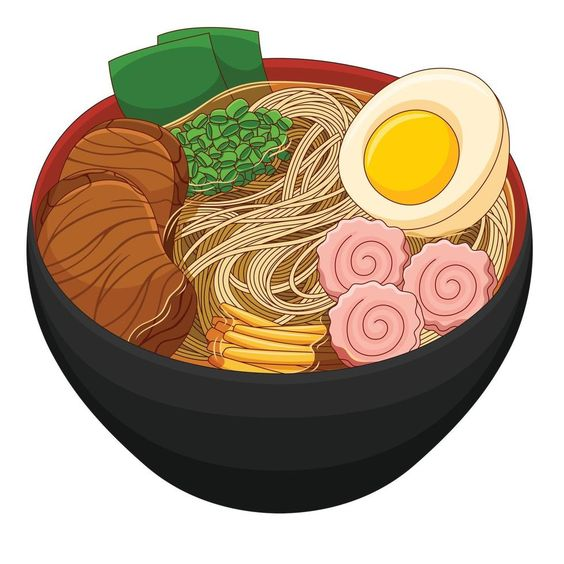
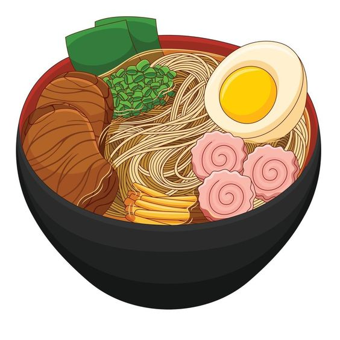

Sushi Palace

Ramen was born when the Chinese noodle dish came to Japan and fused with Japanese cuisine, combining men (noodles), dashi (soup stock), tare (sauce), ingredients, and fat or oil.
There are limitless recipes that include variations in style and flavor, such as soy sauce ramen, miso ramen, salty ramen, pork bone ramen, and dipping ramen.

 

Our Speciality
Ramen was born when the Chinese noodle dish came to Japan and fused with Japanese cuisine, combining men (noodles), dashi (soup stock), tare (sauce), ingredients, and fat or oil.
Locate us Here
Ramen was born when the Chinese noodle dish came to Japan and fused with Japanese cuisine, combining men (noodles), dashi (soup stock), tare (sauce), ingredients, and fat or oil.
There are limitless recipes that include variations in style and flavor, such as soy sauce ramen, miso ramen, salty ramen, pork bone ramen, and dipping ramen.